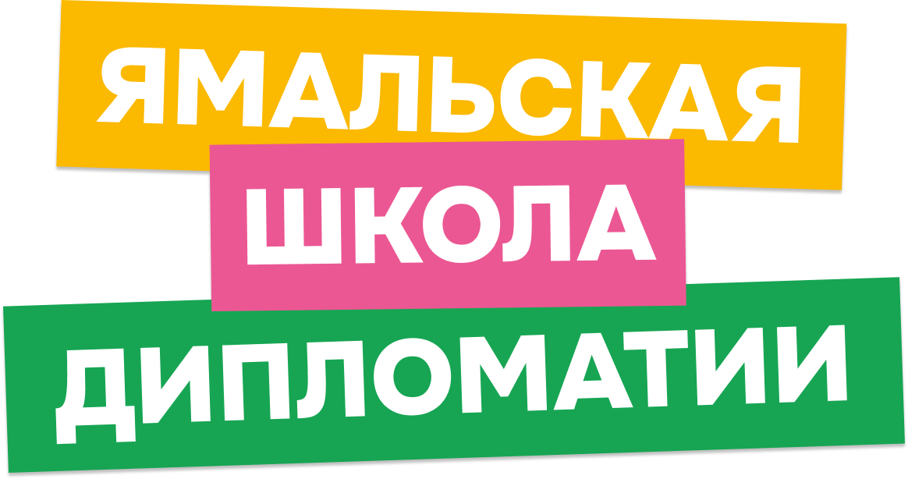

✳
СИЛА
КОМАНДЫ
Объединись с другими участниками, соревнуйся, зарабатывай баллы и докажи, что вместе вы способны на большее.
↗
Скоро старт ↗Четыре дня, которые прокачают твой взгляд на мир. Живое международное общение, сильная команда и твоя собственная идея, которая может стать реальностью.
Хочу быть среди участников ↗Ямальская школа дипломатии — практическая образовательная программа для тех, кому интересно, как устроен мир и как влиять на него через идеи, диалог и действия.
Здесь не получится просто послушать и уйти. Будешь обсуждать, спорить, договариваться, создавать и защищать собственные решения.
← твой следующий уровеньНикакой воды. Только то, что останется с тобой после финального дня.
Объединись с другими участниками, соревнуйся, зарабатывай баллы и докажи, что вместе вы способны на большее.
↗Работай бок о бок с пятью иностранными студентами и взгляни на международную повестку с новой стороны.
↗Создай собственную инициативу, получи обратную связь от экспертов и защити результат перед аудиторией.
↗Расскажи о себе, своих интересах и желании стать частью школы. Приём заявок откроется 1 февраля 2027 года.
Четыре дня командной работы, практики, международного общения и защиты проектов в Губкинском.
Дорабатывай свою инициативу с экспертной поддержкой и двигайся от идеи к реализации.
Ты живёшь в ЯНАО, тебе от 14 до 18 лет и ты хочешь не просто наблюдать за происходящим, а пробовать, предлагать и менять.
Приём заявок стартует 1 февраля 2027 года. Отметь дату — и будь готов сделать шаг навстречу новому опыту.
Увидимся в Губкинском этой весной.
Не пропустить старт ↗